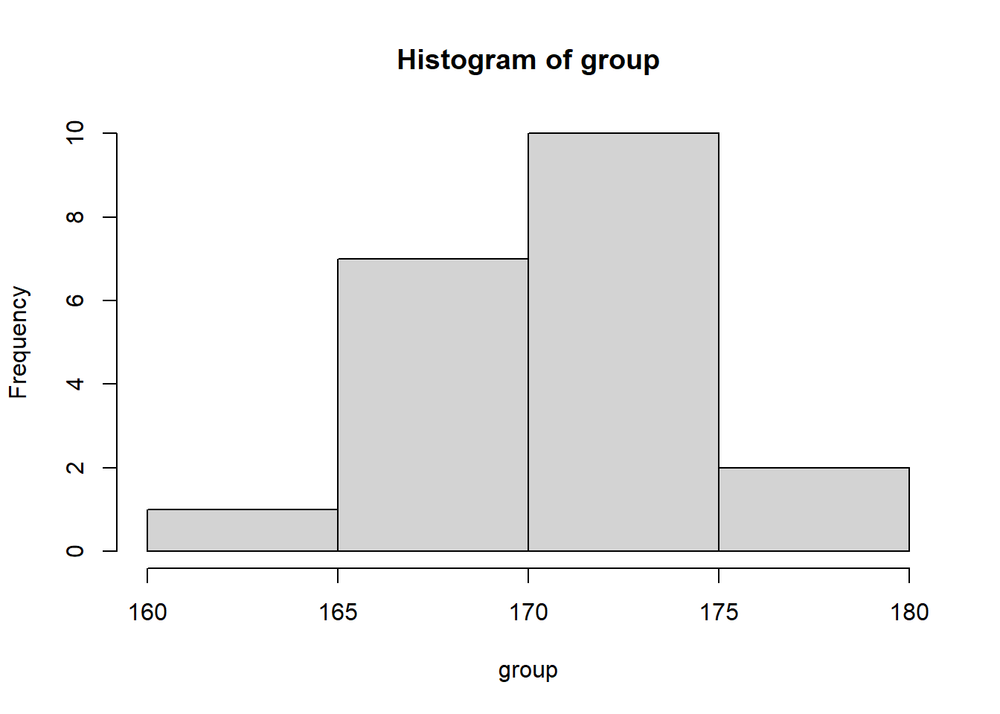
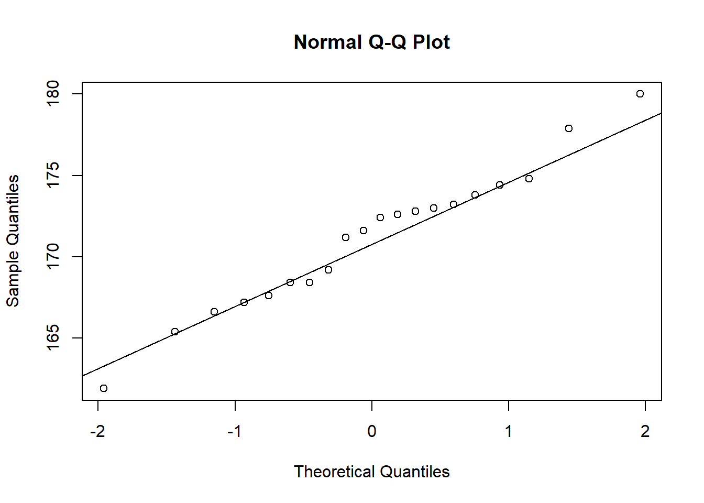

For a course in genetic, a teacher gathered the size of the students for three years. We take the size vector as an example in this chapter. The values are sizes in centimeters.
Annee Sexe Etudiant_e Mere Pere Soeur Frere Demi_soeur Demi_frere
1 2019 F 175 169 186 NA 180 NA NA
2 2019 F 163 165 173 NA 178 NA NA
3 2019 F 153 160 166 NA NA NA NA
4 2019 F 162 164 174 NA 178 NA NA
5 2019 F 157 158 169 NA 161 NA NA
6 2019 F 167 163 180 NA 181 NA NA
Confidence interval on a sample
Peut-on estimer la taille de la population française féminine à l’aide de ce jeu de données
rq: source INSEE taille moyenne F = 1 m 62, et https://ourworldindata.org/grapher/average-height-by-year-of-birth?time=latest&country=~FRA taille moyenne = 1m6488 pour les gens nés en 1996 (pas de date après) Not in intervall, pop grow, + ech non représentatif de la pop française
Confidence interval on multiple sub-samples means
Si on veut désormais estimer \(\mu\), la taille moyenne des étudiants sur les trois promotions du jeu de données.
(mu <-mean(size$Etudiant_e))
[1] 170.5755
mu correspond à la taille moyenne qu’on veut estimer mais dont on ne connait pas la véritable valeur.
Imaginons que nous ayons seulement accès à des moyennes de sous échantillons et qu’on veuille estimer la taille moyenne des étudiants de ces trois promotions.
group <-c()sampled_data <-c()for (i in1:20) { #au total, 100 individus auront été échantillonnésset.seed(i) sample_temp <-sample(setdiff(1:139,sampled_data),5) sampled_data <-c(sampled_data,sample_temp) group <-c(group,mean(size[sample_temp,"Etudiant_e"]))}
Le vecteur group contient les moyennes de plusieurs sous échantillons de 5 étudiants
hist(group)

qqnorm(group)qqline(group)

shapiro.test(group)
Shapiro-Wilk normality test
data: group
W = 0.98028, p-value = 0.9377
La distribution des moyennes suit une loi normale -> TCL ????
On peut définir l’intervalle de confiance suivant:
On a seulement accès à cet échantillon non normalement distribué. La dessus, nous ne pouvons pas calculer les intervalles de confiance comme vu précedemment. C’est là que je Jackknife devient intéressant.